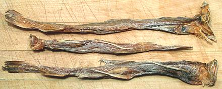
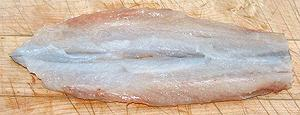

[Bummalow, Bumla, Bombily (India); Lutia (Bengal); Loitta (Bangladesh);
Luli (Malay); Latia, Khô cá Khoai (Vietnam); Long tou yu
(China); Scopelidé (France); Harpadon nehereus]
[Bummalow, Bumla, Bombily (India); Lutia (Bengal); Loitta (Bangladesh);
Luli (Malay); Latia, Khô cá Khoai (Vietnam); Long tou yu
(China); Scopelidé (France); Harpadon nehereus]
A member of the lizardfish family (Synodontidae), this Indo-West Pacific fish is native to the Gulf of Arabia, around India and through Southeast Asia and the South China Sea. It shares many characteristics of fish living at great depth. It has a gaping jaw with a mouth full of needle sharp teeth, in several rows, and even the tongue is covered with needle teeth. The skin and flesh are almost translucent, and the flesh almost gelatinous with incompletely calcified bones and nighttime phosphorescence. I suspect it was a deep benthic fish that returned to shallower waters, or there may be a common ancestor. It does, in fact, have deep sea relatives in family Bathysauridae. This fish inhabits moderate depth water along the coasts and sometimes enters estuaries. This fish is currently abundant, IUCN NE (Not Evaluated).
Bumalo is considered a delicacy, particularly in India and parts of
southeastern China. Bumalo can grow to 16 inches but are commonly 10
inches or less. The photo specimen was 11-1/4 inches long and weighed
5-1/8 ounces. It looks a little pot bellied, because it had just
swallowed two small squid and a small fish, so actual weight was about
4-7/8 ounces (these fish will swallow fish more than half their own
length). The smallest ones in the batch were around 10 inches and 2-3/4
ounces.
 Salted and sun dried, this fish is called "Bombay Duck". Origin of that name is uncertain, but the usual story is an association with the rank smell of the rotting cars of the Bombay mail train (Bombay Daak) during monsoon season. Unfortunately, this story can't be true, as the term "Bombay Duck" is recorded from multiple sources from as early as 1815. Bombay didn't have a railroad until 1852.
For export to England the fish are filleted and cut into squares before drying, but as you can see, these samples, obtained in Los Angeles, are whole fish, just as they would be in India. These specimens were from Vietnam, and the largest was 12 inches long and weighed 1-1/8 ounces. I also have specimens from India, but the heads and tails are cut off.
More on Lizzardfish.
In India this fish is often used dried as a seasoning for curries and rice. Pieces of dried fish are fried until crisp then crumbled for use. Fried lengths of the dried fish are often served as an appetizer. In India, fresh Bumalo is considered desirable, but is little available in most of the country due to lack of refrigeration. Where it is available it is generally seasoned and deep fried. In northern Guangdong province, China, fresh Bumalo is also liked and is fried and seasoned with salt and pepper.
The backbone is not well calcified and can be chewed up, and that's the way it is sometimes handled in India, but other recipes call for removing it. While a good source of calcium, the backbone is a bit too large and crunchy for my liking, so I discard it.
Bombay duck was briefly banned by the European Union because its manufacture (open air drying by small businesses) did not conform to EU sanitation standards. Considerable protest ensued (Britain was eating 13 tonnes per year) and the EU now allows it if packaged at an approved facility.
 Cooking: For fresh fish, any wet method of cooking will turn this fish into mush. The only suitable methods are to powder it with rice flour, perhaps with some coarse semolina for texture, and either pan fry it or deep fry it. Deep frying it will curl to the skinside, but pan frying you can keep the fillets flat. Brown lightly on the flesh side and then turn it over. Pat down if it curls at all.
Recipes: We have two recipes for Bombay duck:
Bombay Duck, Fried
#1 for Dried Bombay Duck. I have served this to guests who
described it as "Fish Jerkey". They liked it, but my guests will eat
almost anything.
Bombay Duck, Fried
#2 for Fresh Bombay Duck.
Buying: I have purchased fresh fish from the San Gabriel Superstore, a very large Asian emporium in greater Los Angeles. My most recent buy was from a Philippine market in Eagle Rock at 2014 US $0.99 / pound. Because of its unique flesh this fish is highly perishable, needs to be kept well chilled and should be eaten the same day it's thawed.
Subst: Because of its unique characteristics there is no substitute for this fish.
Dried is rare in Indian markets in Los Angeles county, most of which are strictly vegetarian. but I have found it in one that isn't. I have also purchased dried ones labeled "Lutia Fish". These were from Vietnam, and again from the San Gabriel Superstore.
Scales: This fish is supposed to have some scales back towards the tail, so it is rated kosher, but I have yet to find any.
Skin: The skin is very thin and has almost no shrink at all in cooking. Don't try to remove it, it's what's holding the fillets together.
Cleaning and Filleting: This fish is easy to clean and fillet, but it's done a bit different from most fish, more like you would prepare a sardine. for more details see our Photo Gallery
Yield: Pretty good, actually. A batch of 9 fish weighing 2 pounds 3-1/4 ounces yielded 1 pound 1 ounce of trimmed fillets (48%), after wringing out excess water.
Stock: You've got to be kidding - you'll end up with a pot of slime.
sf_bumaz 100524 r 140428 - www.clovegarden.com